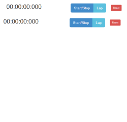
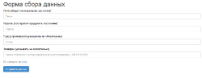
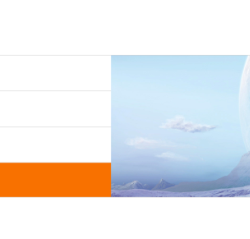

ABOUT ME

I’m lawyer by education and past profession. Now I’m dreaming about connection my life with IT-industry, take active part in development of high-quality products for customers which will make them better and happier.
Now I’m student, as everybody of us. I like both Java and JavaScript. These two power technologies could be beautiful couple)
I like work productive, for the best result.
I am fond of playing guitar, all variants of hand-made, yoga and all sport activities.
SKILLS
- JavaScript;
- JQuery;
- HTML;
- CSS;
- Bootstrap;
-Java;
- English intermediate.
MY WORKS

Task description:
Реализовать виджет "секундомер". Кнопки "стоп", "старт" (одна и та же кнопка), "сброс", "круг". Секундомер работает с точностью до миллисекунд. Когда он запущен, показывается время в формате чч:мм:сс:мс. Нажатие на кнопку "стоп" останавливает ход секундомера. Кнопка "круг" добавляет текущее значение секундомера в список результатов. Элементы из списка результатов можно удалять поштучно. Кнопка "сброс" останавливает секундомер, если тот бежит, сбрасывает значение в нули, убирает все результаты, если такие есть. "круг" работает одинаково для остановленного и запущенного секундомеров.
Управление с клавиатуры (проверь, чтобы работало в разных расскладках): s - start/stop, l - lap, r - reset. Если на странице несколько секундомеров, с клавиатуры управляется тот, над последним из которых находилась мышка.
Timer's page link
Timer's code link

Task description:
Релизовать валидацию формы. Валидировать поля формы надо в процессе набора (но не показывать ошибки до того, как пользователь что-то ввел). Форму нельзя мочь отправить, если есть ошибки. Если показаны ошибки, кнопка отправки формы должна быть неактивной (код неактивной кнопки закомментирован). Поля, обязательные к заполнению помечены звездочками.
Поля с ошибкой должны подсвечиваться должным образом (который можно увидеть, раскомментировав код на бутстрап странице).
Все регулярки должны быть написаны самостоятельно.
Возможные ошибочные ситуации. Для каждой придумать и выводить поясняющее сообщение. Из сообщения должно быть ясно в чем проблема. Варианты ("что-то не так") не использовать.
1. Поле, обязательное к заполнению не заполнено
2. Ошибка в email-е
3. email уже занят (сверяться со статическим списком email-ов, который хоранится на глобальном уровне в переменной usedEmails)
['author@mail.com', 'foo@mail.com', 'tester@mail.com']
4. Пароль слишком короток (до 5 символов)
5. Простой пароль (только числа, только буквы)
6. Пароль содержит запрещенные символы (разрешенные - латинские буквы, цифры, подчеркивание, минус)
7. Международный формат записи телефона не выдержан
8. Галочка "Согласен со всем" не поставлена
Validation form's page link
Validation form's code link

Task description:
Реализовать слайдер
Слайдер состоит из фиксированного количества слайдов (4шт), изображения имеют одинаковый заранее известный размер. Переход между слайдами анимирован. При клике на плашку слева происходит переход к соответствующему слайдеру, соответствие определяется порядком. Верхняя плашка - первый слайд, вторая сверху - второй, итд.
Сразу же после инициализации у слайдера включается режим автопрокрутки: показ следующего слайда каждые 2 секунды. Если пользователь кликнул на одну из плашек, перейдя к слайду, автопрокрутку нужно отключить. Автопрокрутку нужно включать через 5 секунд после последнего клика пользователя по плашке. Автопрокрутка циклическая: с последнего слайда происходит переход к первому. На странице можно разместить несколько слайдеров.
Слайдер подразумевает всегда 4 штуки изображений.
Slider's page link
Slider's code link